生活機能を維持・向上させることに時間を使いたい。
私たちが提供したいのは、単に身体を動かす時間ではありません。
歩く、立つ、階段を上る、買い物に行く、外出する。
そうした日常生活に必要な能力を維持・向上させるために、機能訓練を中心としたサービスを提供しています。
毎回の運動×整体×イベントで、短い時間で楽しみながら人生の質を高める。静岡県東部・裾野市／三島市／長泉町の機能訓練施設です。
イキイキ運動 スッキリ整体 ワクワク体験イベント
East-oneとは
East-oneは、毎回のイキイキ運動・スッキリ整体・ワクワク体験イベントを通して、歩く力・豊かな心・人とのつながりが生まれるフィットネス型デイサービスです。
人とのつながりが生まれることで、ただ身体を動かす場所ではなく、毎日が楽しくなり、自然と「誰かに会いたい」「誰かと話したい」と思える場所になります。
私たちが目指しているのは、生活の質（QOL）ではなく、人生の質（QOLife）を高めるデイサービスです。“動く・考える・話す・楽しむ”――「自分らしく、豊かに生きる毎日」を支えます。
午前の部と午後の部があり、どちらか都合のよいほうを選べます。1日でも長く自分らしくご自宅で生活できるように、通う時間をすべて機能訓練にあてています。
運動で体が軽くなり、人と話して気持ちが前向きになり、楽しい時間があるから外に出たくなる。その積み重ねが人生の質を高めていくと考えています。
接骨院・鍼灸院・スポーツ施設を運営するグループの一員として、身体の専門家が在籍しています。
半日型である理由
いつまでも、自分らしく暮らしてほしいから。
私たちが大切にしているのは、デイサービスで過ごす時間だけではありません。
本当に大切なのは、ご自宅や住み慣れた地域で、自分らしい生活を続けていくことです。
そのためには、歩く力、立ち上がる力、身体を動かす力など、日常生活を支える身体機能を維持向上させていくことが大切です。
だからこそ私たちは入浴や食事の提供ではなく、機能訓練を中心とした半日型のデイサービスを選びました。
限られた時間を、これからの生活を支えるための時間に。
私たちは、利用者様一人ひとりの「これからも自分らしく暮らしたい」という想いを応援します。
私たちが提供したいのは、単に身体を動かす時間ではありません。
歩く、立つ、階段を上る、買い物に行く、外出する。
そうした日常生活に必要な能力を維持・向上させるために、機能訓練を中心としたサービスを提供しています。
デイサービスに長時間いることが目的ではありません。
本当に大切なのは、デイサービスを利用していない時間を、いかに自分らしく過ごせるかです。
だからこそ、半日という時間設定に意味があります。
「まだデイサービスを利用するほどではない。」
「今は自分で歩けるし、生活にも困っていない。」
そう思っている方に、
ぜひ利用してほしい。
今できていることを、これからも続けるために身体づくりを始める。
弊社の半日型には、そうした介護予防の意味もあります。
長時間の利用を必要とせず、
食費の負担もありません。
ご自身の生活リズムを大切にしながら、必要な機能訓練を継続できます。
サービスは、一度利用して終わりではありません。
継続することに価値があります。
プログラム
運動・整体・個別訓練・口腔機能・イベント。目的の違うプログラムを組み合わせることで、体だけでなく気持ちにも働きかけます。
ハチマルスキップリハリズム®
リズムに合わせて体を動かすことで、無理なく楽しく運動ができ、歩く・立つ・動くといった日常動作につながります。
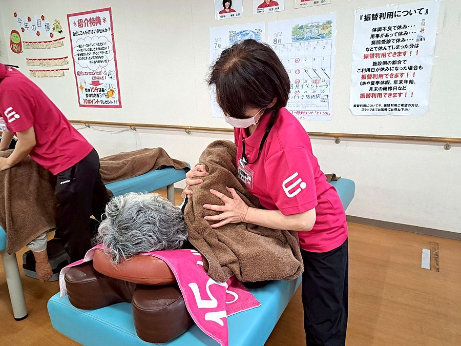
ケア整体
身体のプロが筋肉の緊張やバランスを整え、歩く・立つ・座るなどの動きを楽にしていきます。
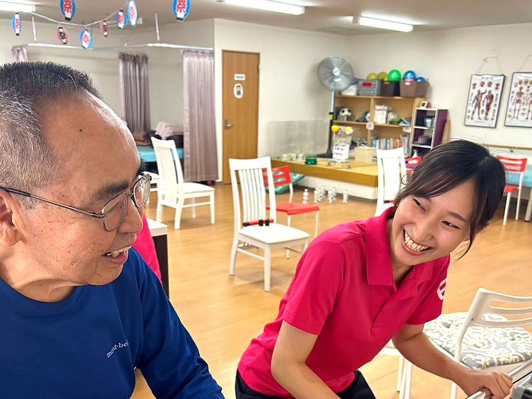
個別機能訓練
利用者様の状態に合わせた個別機能訓練で、「できない」を「できる」に変えていきます。
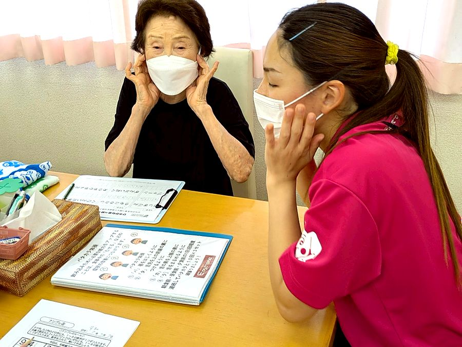
口腔機能訓練
口や舌の体操を行い、食べる・話す・笑う力を維持し、健康な生活につなげます。
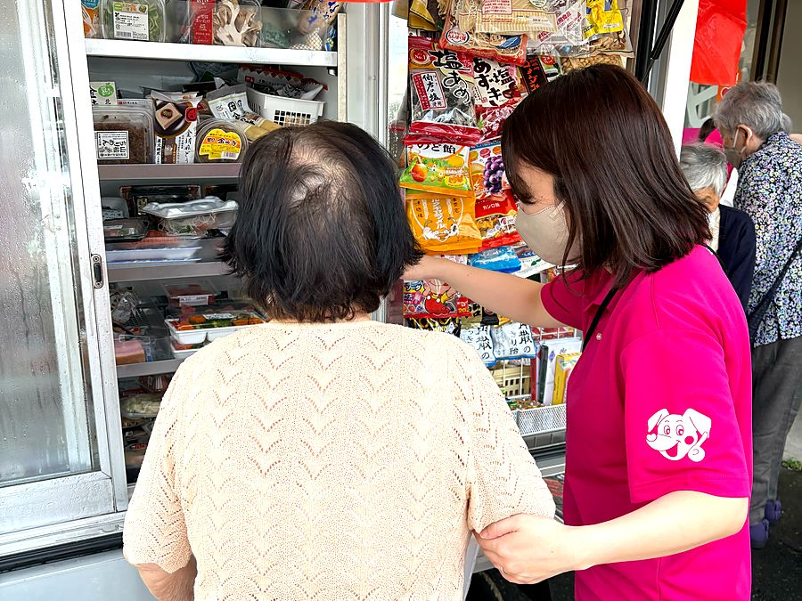
体験型ワクワクイベント
季節イベントや交流イベントを通して人との会話やつながりが生まれ、外に出る楽しみが増えていきます。
East-oneの笑顔になる機能訓練サイクル
自立した生活ができるようサービスを提供します。
1日の流れ
送迎から送迎まで、休憩をはさみながら無理のないペースで進みます。ご都合に合わせて午前・午後どちらかをお選びいただけます。
| 8:30 | お迎え |
| 9:00 | 店舗到着 |
| 9:15 | 健康状態の確認 |
| 9:30 | 体操 |
| 9:40 | 整体、個別訓練 |
| 11:20 | 筋力トレーニング |
| 11:30 | 体験型イベント |
| 11:50 | 血圧測定 |
| 12:15 | ご自宅まで送迎 |
| 12:45 | お迎え |
| 13:15 | 店舗到着 |
| 13:25 | 健康状態の確認 |
| 13:35 | 体操 |
| 14:00 | 整体、個別訓練 |
| 15:40 | 筋力トレーニング |
| 15:50 | 体験型イベント |
| 16:10 | 血圧測定 |
| 16:30 | ご自宅まで送迎 |
※入浴と食事の提供はありません。そのぶん、1時間40分を機能訓練に当てています。
※送迎の時刻はお住まいの地域によって前後します。
利用者様の声
実際にEast-oneに通われている方に、利用してみての感想を伺いました。
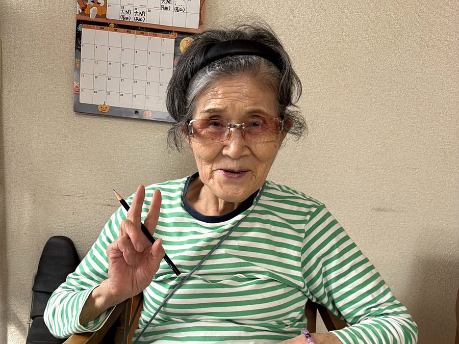
本店・女性
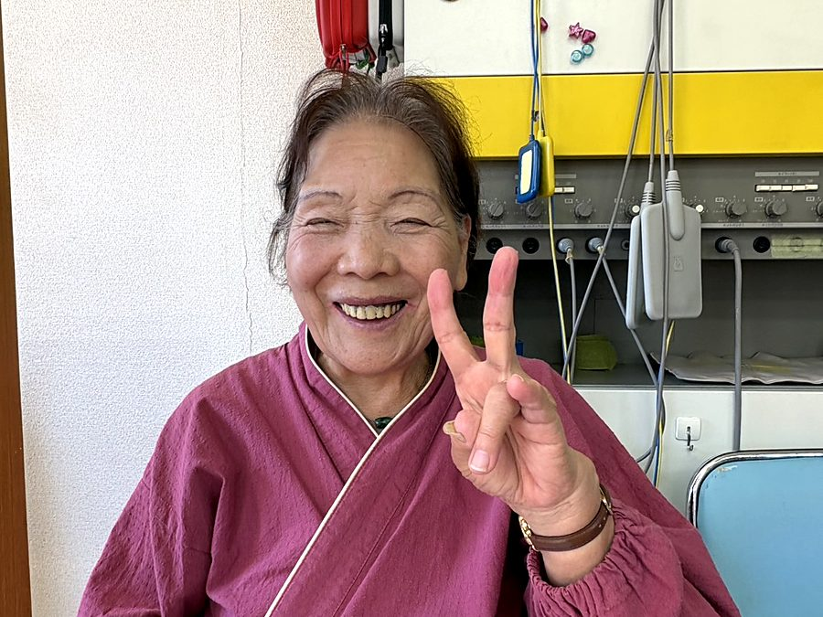
本店・女性
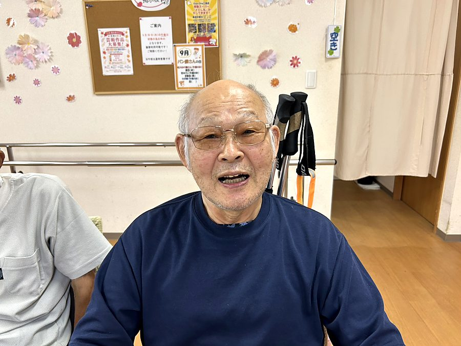
三島店・男性
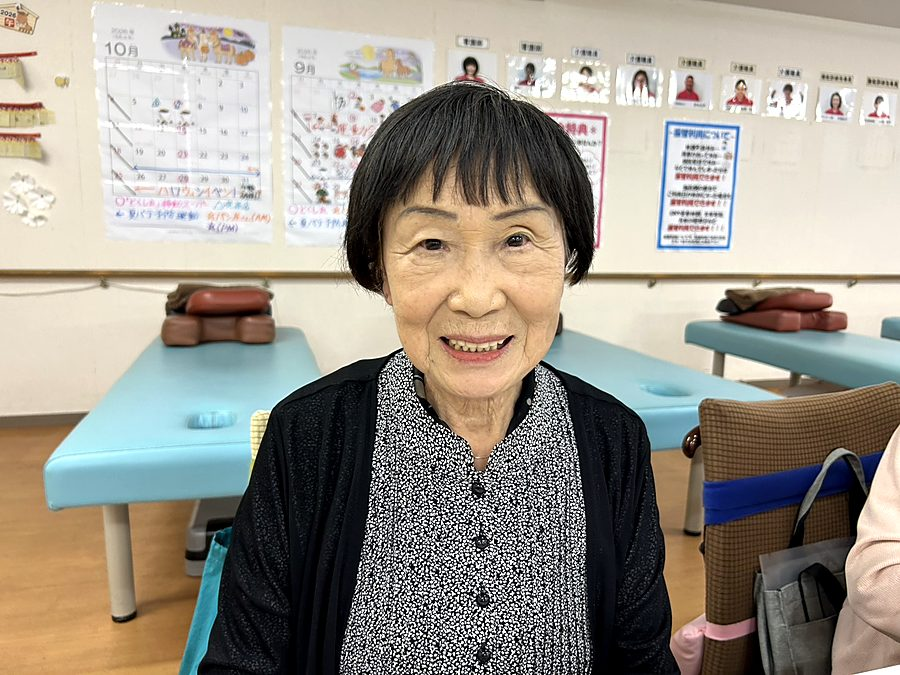
三島店・女性
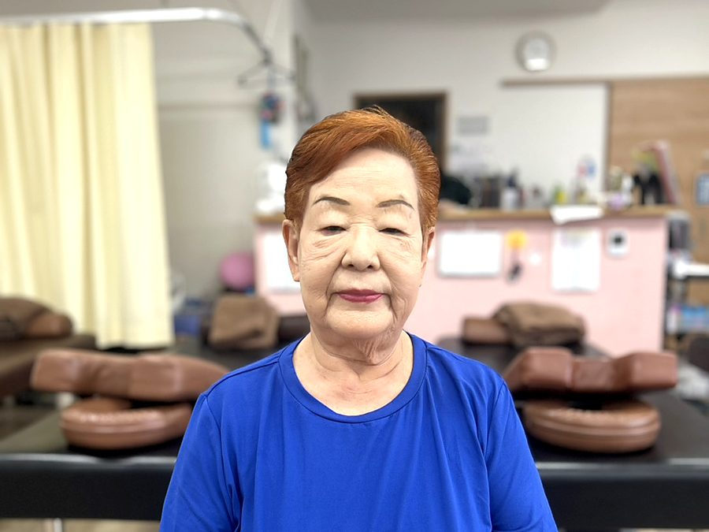
長泉店・女性
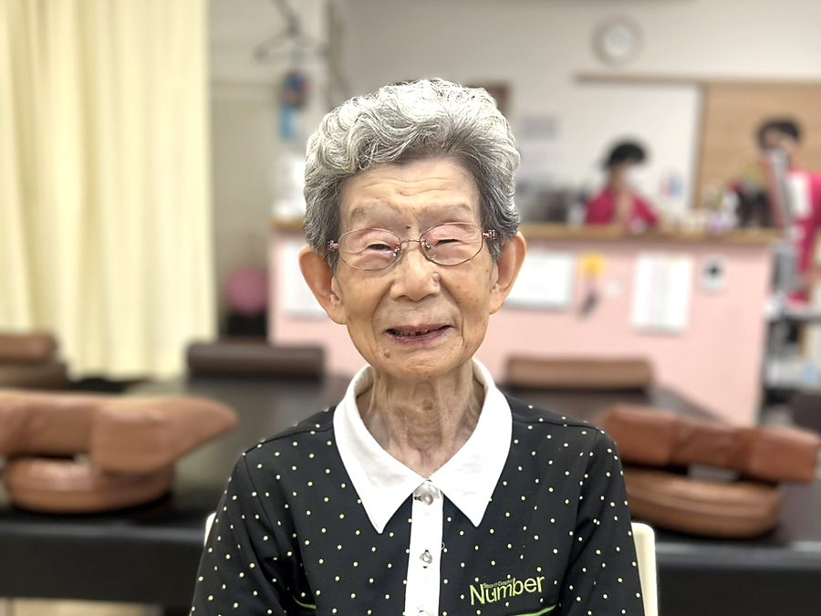
長泉店・女性
※ご本人の許可を得て掲載しています。感じ方や変化には個人差があります。
まずは見学・無料体験から
見学のみでも歓迎です。ご家族だけでの見学もお受けしています。
お問い合わせ・ご予約
（お電話／公式LINE）
見学・体験
ご説明・ご相談
ご検討
（当日判断は不要です）
施設一覧
3店舗とも営業時間・プログラムは共通で、定休日は日曜です。送迎範囲が施設ごとに分かれていますので、どちらに通えるか分からない場合もお気軽にお電話ください。
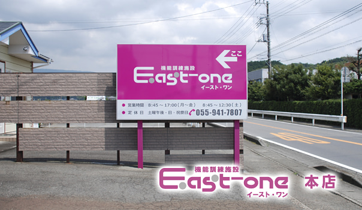
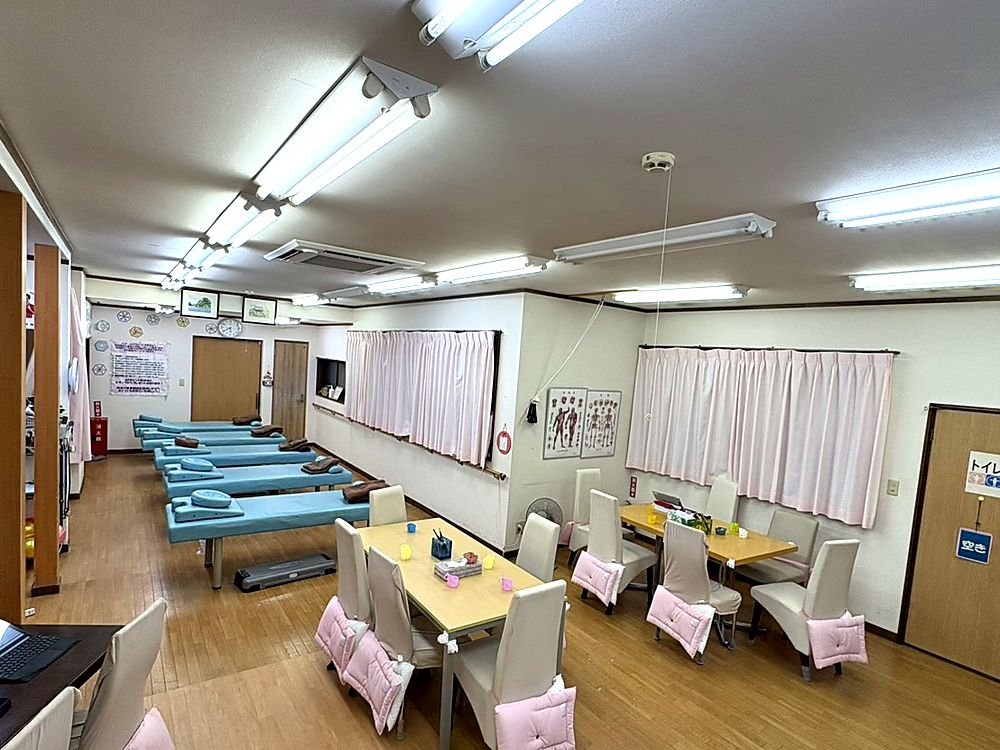
FAX 055-941-7807
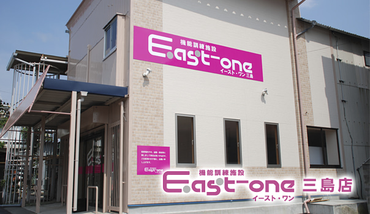
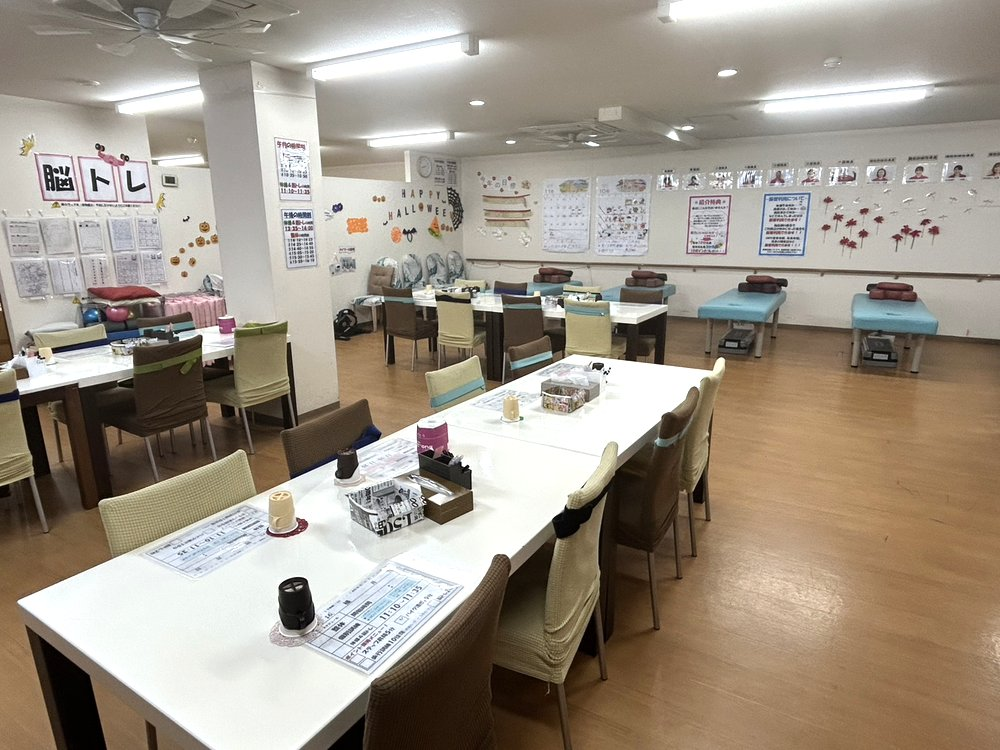
FAX 055-943-9009
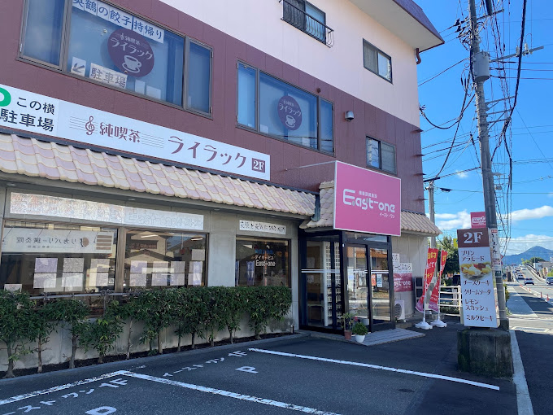
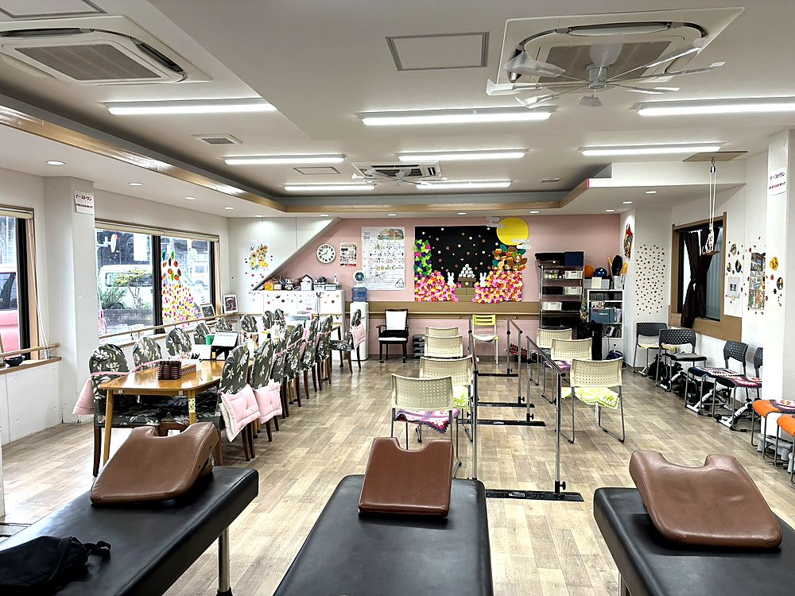
FAX 055-957-4004
ケアマネージャーの方へ
午前・午後それぞれ約3時間の短時間型。国家資格者による個別機能訓練を中心に、ケア整体・運動・口腔機能訓練・社会参加イベントを組み合わせ、ADL・IADLの維持向上を図ります。
3店舗合計・2026年9月現在
空き状況は日々変動します。各店へのお電話、FAX、公式LINEのいずれでもお問い合わせいただけます。電話番号とFAX番号は施設一覧に記載しています。見学・体験は無料です。
3店舗の連絡先を見る費用について
要介護度や自己負担割合によって金額が変わります。詳しくは担当のケアマネージャー様、またはEast-oneまでお問い合わせください。
| 介護保険自己負担分 | 要介護度・自己負担割合・利用時間により異なります。 |
|---|---|
| 通常の実施地域外の送迎 | 1kmにつき30円 ※送迎範囲を超えた地点から直線距離で1kmを超える場合に算定します |
| おむつ代 | 実費 |
| キャンセル料 | いただいておりません |
食事の提供は行っていないため、食費はかかりません。
よくある質問
ここにないことも、お電話・公式LINEでお気軽にお尋ねください。
要支援1・2、要介護1〜5の認定を受けた方と、事業対象者の方がご利用いただけます。まだ認定を受けていない方は、お住まいの市町の窓口や地域包括支援センターにご相談ください。どこに相談すればよいか分からない場合も、お気軽にお電話ください。
ありません。East-oneは午前・午後それぞれ約3時間の半日型で、お風呂や食事に使う時間を機能訓練にあてています。食事の提供がないため、食費もかかりません。
午前の部（8:30〜12:15）と午後の部（13:15〜16:30）があり、どちらかをお選びいただけます。送迎の時刻はお住まいの地域によって前後します。
あります。送迎範囲は、本店が裾野市内、三島店が三島市（一部を除く）と長泉町全域、長泉店が長泉町内です。通常の実施地域外の方は、ご家族による送迎、または1kmにつき30円の実費で対応いたします。
介護保険の自己負担分（1〜3割）と、おむつ代などの実費です。金額は要介護度・負担割合・利用時間によって変わります。食費とキャンセル料はかかりません。詳しくは担当のケアマネージャー様か、各店舗までお問い合わせください。
大丈夫です。機能訓練指導員がお一人おひとりの状態に合わせて訓練の内容を決めますので、無理なく始められます。事業対象者や要支援の方も多く通われています。
無料です。見学だけでも歓迎しています。ご家族だけでの見学もお受けしていますし、その場で利用を決めていただく必要もありません。
ご希望の店舗へのお電話か、公式LINEからお申し込みください。受付時間は8:30〜17:30（日曜定休）です。
担当のケアマネージャー様がいらっしゃる場合は、ケアマネージャー様にご相談いただくと、ケアプランへの位置づけまでスムーズに進みます。もちろん、East-oneへ直接ご連絡いただいても構いません。
「本人が乗り気ではない」「どのくらい動けるか分からない」という段階でも構いません。ご希望の店舗へのお電話か、公式LINEからお気軽にご連絡ください。
友だち追加していただくと、見学・体験のお申し込みやご相談をトークからお送りいただけます。お電話がつながりにくい時間帯でもお気軽にどうぞ。
受付時間 8:30〜17:30（日曜定休）
見学・体験は無料です。
イベントの様子や日々の訓練の風景は、Instagramで公開しています。
通っている方がどんな時間を過ごしているか、雰囲気を見てからご検討ください。
グループ企業
East-oneは、接骨院・鍼灸院・スポーツ施設などを運営する80SKIPグループの一員です。